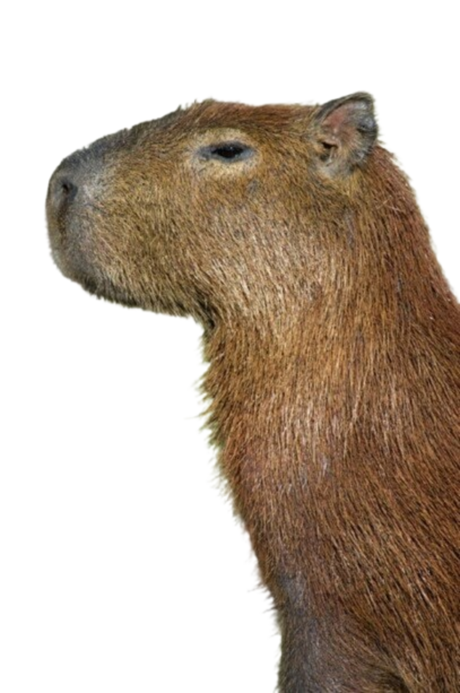
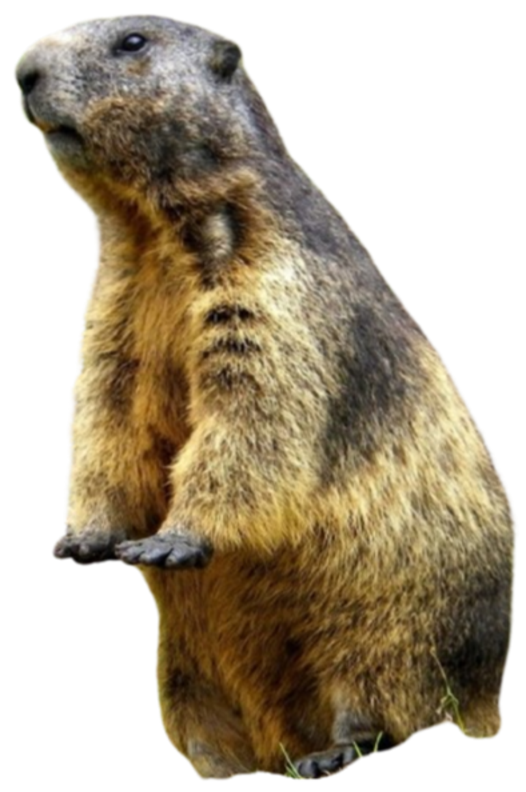
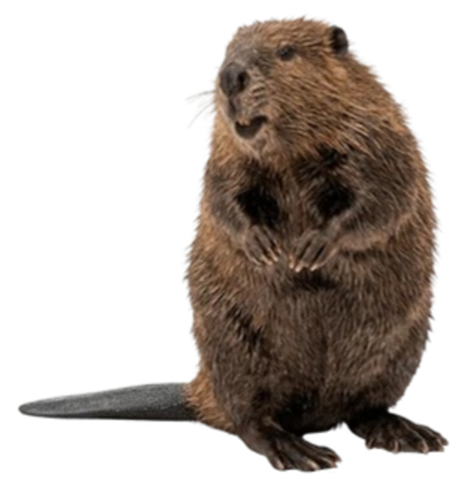
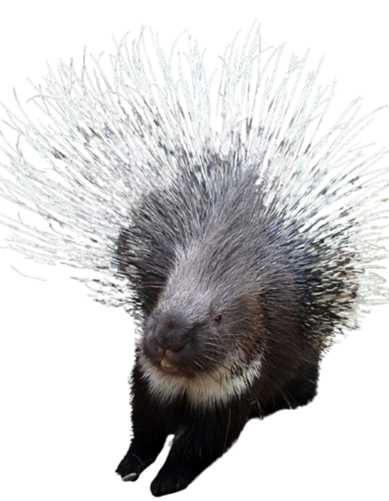
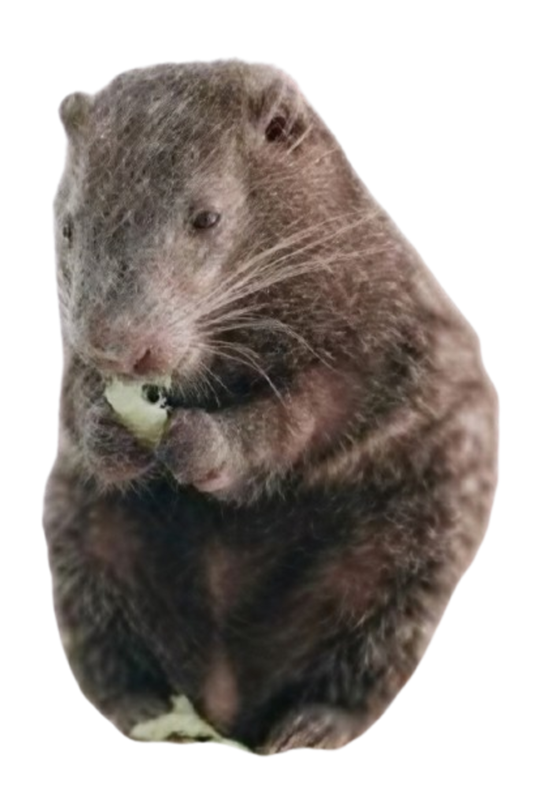
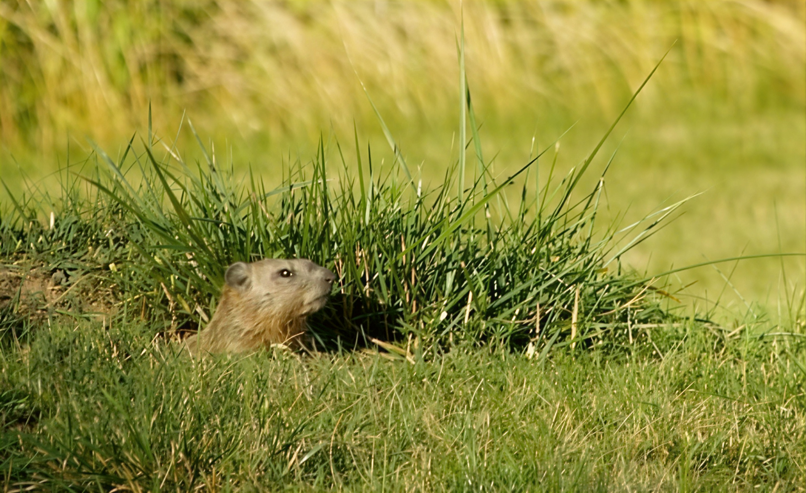

A kapibara a világ legnagyobb ma élő rágcsálója. Dél-Amerika vizes élőhelyein, folyók és tavak közelében fordul elő. Teste zömök, lábujjai között részleges úszóhártya található, ezért kiválóan úszik. Társas állat, gyakran kisebb-nagyobb csoportokban él, és ideje jelentős részét legeléssel, pihenéssel vagy vízben tartózkodással tölti.

Kapibara
A mormoták nagyobb termetű, talajlakó rágcsálók, amelyek hegyvidéki réteken és füves területeken élnek. Erős karmaikkal hosszú járatrendszereket ásnak, ezekben pihennek, nevelik kölykeiket, és veszély esetén ide menekülnek. A hideg hónapokat téli álomban töltik, ezért nyáron és ősszel sok táplálékot fogyasztanak, hogy elegendő zsírtartalékot halmozzanak fel.
A mormoták gyakori táplálékai:
Füvek Levelek Virágok Magvak Gyökerek és hajtások
Mormota
A hód vízhez kötődő, nagytestű rágcsáló, amely leginkább gátépítő tevékenységéről ismert. Erős metszőfogai folyamatosan nőnek, ezért rendszeresen rág fákat és ágakat. A hódok munkája átalakíthatja a patakok és kisebb folyók környezetét: tavacskákat, mocsaras élőhelyeket hozhatnak létre, amelyek sok más állatnak is otthont adnak.
Lapított farkuk segíti az úszást és a vízben való irányváltoztatást. Főként fakéreggel, hajtásokkal és vízinövényekkel táplálkoznak. Váraikat ágakból, sárból és növényi részekből építik. Fontos szerepük van a vizes élőhelyek kialakításában.
Hód
A tarajos sül látványos külsejű, nagyobb testű rágcsáló, amelynek hátát és oldalát hosszú, kemény tüskék borítják. Ezek a tüskék elsősorban védekezésre szolgálnak: ha az állat veszélyt érez, felborzolja őket, és igyekszik elriasztani támadóját. Éjszakai életmódú, nappal többnyire üregekben vagy védett búvóhelyeken pihen.

Tarajos sül
A pakarána Dél-Amerikában élő, ritkább nagytestű rágcsáló. Teste zömök, mozgása lassú, bundáján gyakran világosabb foltok vagy csíkok láthatók. Főként erdős, hegyvidéki területeken fordul elő. Növényi táplálékot fogyaszt, például gyümölcsöket, leveleket és hajtásokat.

Pakarána
| Faj | Adatok | |
|---|---|---|
| Méret / testtömeg | Élettartam | |
| Kapibara | 100–135 cm; 35–65 kg | 8–10 év |
| Mormota | 40–70 cm; 3–8 kg | 6–15 év |
| Hód | 80–120 cm; 11–30 kg | 10–20 év |
| Tarajos sül | 60–90 cm; 10–25 kg | 12–20 év |
| Pakarána | 70–80 cm; 10–15 kg | 9–13 év |

A nagytestű rágcsálók nagyon változatos környezetben élhetnek. Vannak köztük vízhez kötődő fajok, mint a kapibara, a hód és a nutria, míg mások inkább hegyvidéki réteken, erdőkben vagy szárazabb területeken fordulnak elő. Közös jellemzőjük az erős, folyamatosan növő metszőfog, amelyet táplálkozáshoz, építéshez vagy akár védekezéshez is használhatnak.
Ezek az állatok fontos szerepet töltenek be az ökoszisztémákban. A hód például élőhelyeket alakít ki más fajok számára, a növényevő rágcsálók pedig hatással vannak a növényzet megújulására. Bár általában nem veszélyesek az emberre, vadon élő példányaikat érdemes távolról megfigyelni, és nem szabad etetni vagy háborgatni.